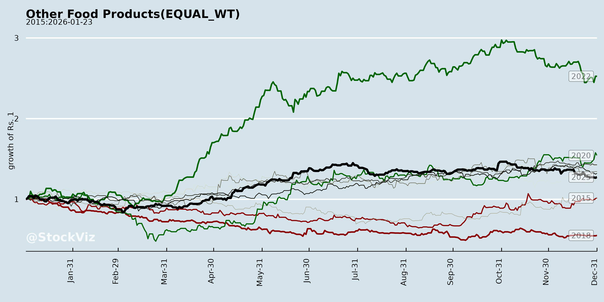
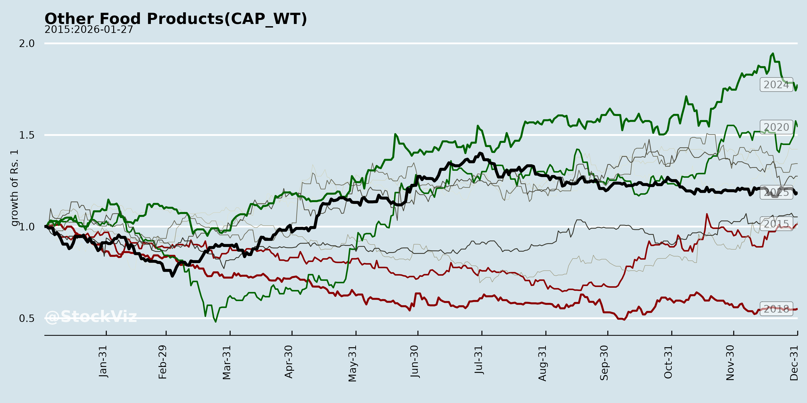
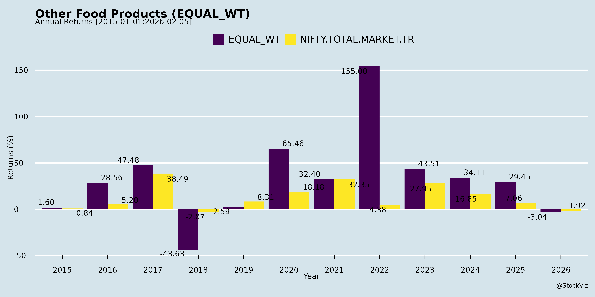
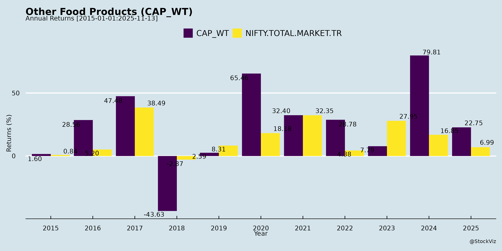
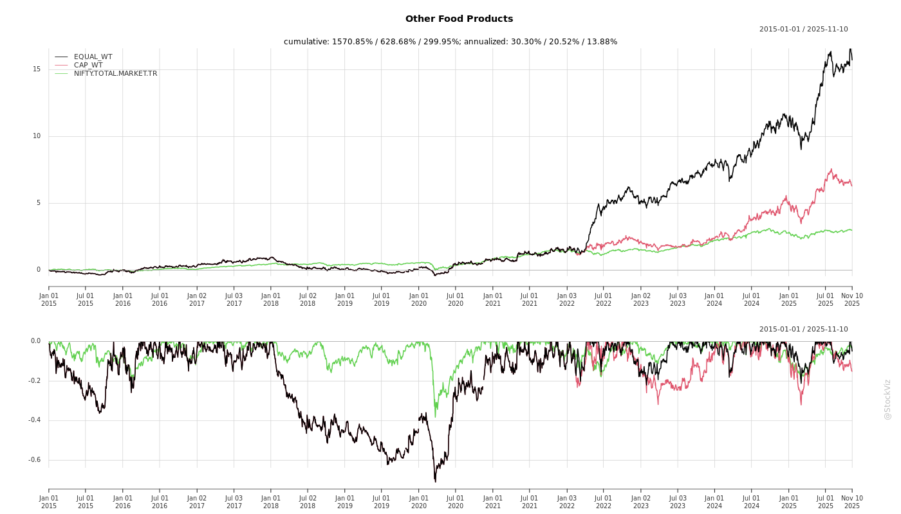
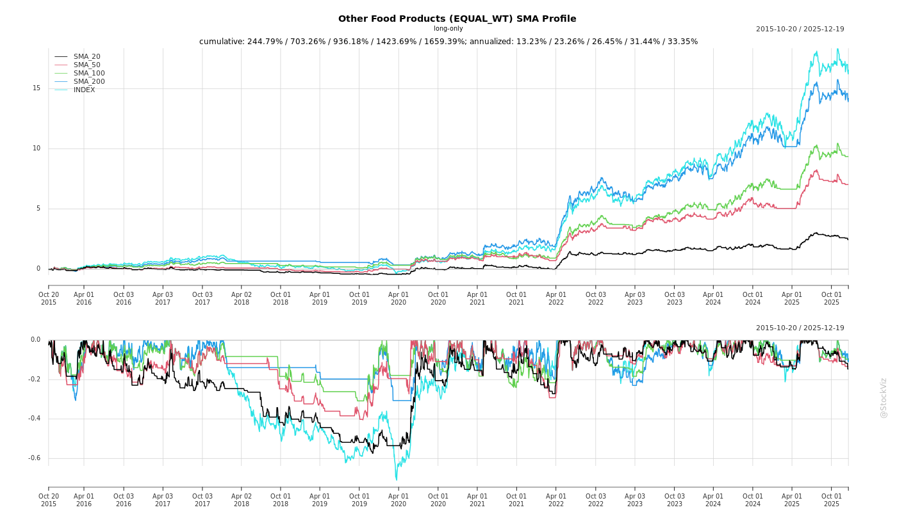
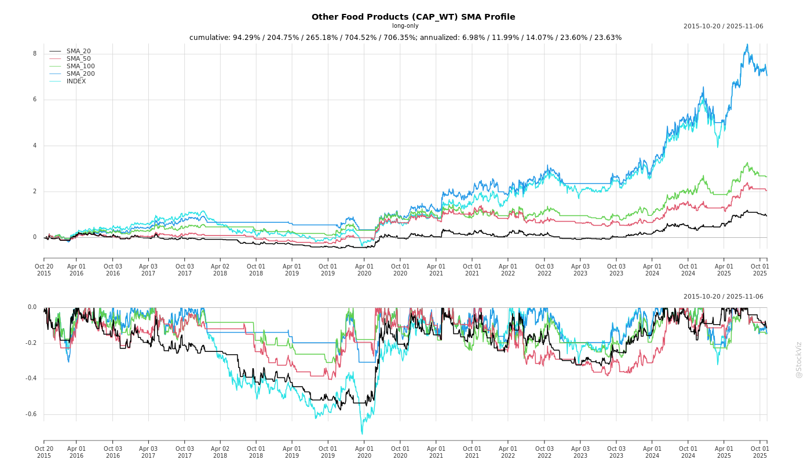
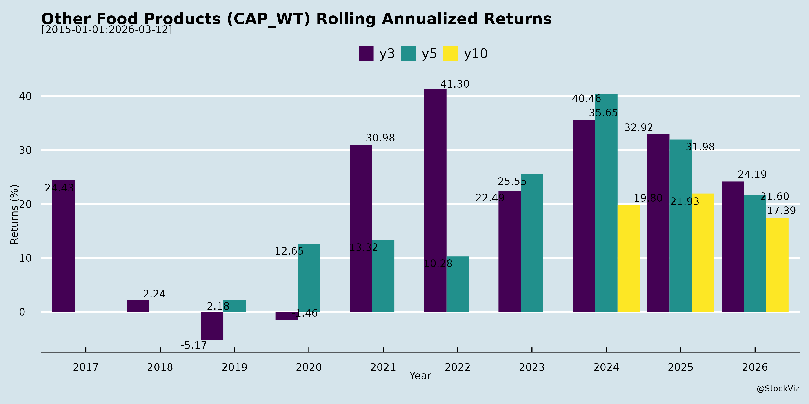

Other Food Products
Industry Metrics
February 20, 2026
Annual Returns




Cumulative Returns and Drawdowns

SMA Scenarios


Current Distance from SMA
Rolling Returns


Market Cap
EBIT (% of Industry Total)
Revenue (% of Industry Total)
AI Summaries
Analyst
asof: 2025-11-30
Summary Analysis: Indian Other Food Products Sector
(Based on Q2/H1 FY26 earnings transcripts from E.I.D. Parry (consumer products, nutraceuticals), Orkla India (spices, convenience foods), Krishival Foods (nuts, ice cream), and ancillary mentions like Manorama Industries. Focus excludes core sugar/ethanol but emphasizes spices, convenience, nuts, pulses, nutraceuticals, and ice cream as “other” processed/premium foods.)
Tailwinds (Positive Drivers)
- Macroeconomic Support: Improving consumption environment with lower food inflation (negative in some reports), income tax relief, interest rate cuts, and GST 2.0 reductions (e.g., spices/convenience foods impacted 25% of portfolios but boosted affordability; nuts/ice cream GST to 5% passed 100% to consumers, spurring organized demand).
- Volume-Led Growth & Premiumization: Strong volume gains (Orkla: 7.7% Q2, 8% H1; Krishival: 50-60% revenue surge). Shift to premium/value-added products (e.g., Orkla’s local cuisine spices, ready-to-eat sweets/batters; Krishival’s flavored nuts, Kaju Katli; EID Parry’s consumer staples stabilization).
- Channel Expansion: Digital/quick commerce boom (Orkla: 49% growth, 10% of sales; Krishival: 5-8% via Blinkit/Zepto, expanding). Tier 2-4 penetration (Krishival’s focus; Orkla’s rural sampling).
- Capacity & Efficiency: Expansions yielding leverage (Krishival: nuts to 40 MT/day, ice cream to 100% utilization by FY28; Orkla’s EBITDA margin up to 16.9-17.8% adjusted).
- Exports & Diversification: Early wins (Krishival: SGD 1M from Singapore, eyeing Japan/US; Orkla: 21% sales from 45 markets; EID Parry nutraceuticals growth).
Headwinds (Challenges)
- Commodity Volatility/Deflation: Sharp raw material drops (Orkla spices: 22-25% over 2 years, passed to consumers eroding revenue; EID Parry pulses: 30-38% price fall due to imports).
- Policy & Transition Costs: GST changes disrupted billing/inventories (Orkla: 7-10 days sales hit); quota restrictions (EID Parry consumer: 30% degrowth).
- Margin Pressures in Scaling Segments: Ice cream/nuts not yet fully PAT accretive (Krishival: 90-95% PAT from nuts currently); one-offs like insurance/transitions (EID Parry nutraceuticals).
- Seasonal/Quota Constraints: Festive timing shifts, release quotas (EID Parry consumer/sugar sales down 12%).
Growth Prospects
- High Double-Digit Potential: Organic strategies yield 19-60% segment growths (convenience foods/sweets: 19-26%; nuts: 20%; ice cream scaling to 25%+ of mix). Aspirational demand in FMCG (India market to USD 778B by 2030; ice cream to quadruple by 2032).
- Innovation & Localization: New platforms (Orkla: 5-min breakfasts, RTE mithai; Krishival: 140+ ice cream SKUs). Per capita upside huge (Orkla Karnataka: 12/260 sambar occasions captured).
- Balanced Portfolio: Dual brands/segments de-risk (nutrition via nuts; indulgence via ice cream/convenience). Triple-digit revenue by FY27-28 (Krishival); convenience as “next engine” (Orkla/EID Parry).
- Omnichannel/Exports: Quick commerce to dominate; Tier 2-4 remittances/WFH boosting disposable incomes.
Key Risks
- Commodity & Input Costs: Deflation/inflation swings (spices/chilli: unorganized 60% competition caps premiums at 10-15%; milk fluctuations in ice cream).
- Policy/Regulatory Uncertainty: Ethanol/sugar spillovers (EID Parry), import surges (pulses), blending/export quotas. GST transitions recur.
- Execution on Scale: Capacity ramps (overcapacity risks if demand lags); distribution consolidation (EID Parry Q3 volume dip).
- Competition & Unorganized Share: Local brands erode pricing power; overcapacity in ethanol-adjacent (grain shift).
- Geographic Concentration: South India dominance (Orkla/EID Parry 70% sales); forex/export tariff volatility (Krishival US/Japan).
Overall Outlook: Sector resilient with volume/margin tailwinds outweighing commodity headwinds. Growth pegged at 15-30%+ for premium segments amid consumption revival, but monitor policy/commodity cycles. Strong execution on capacity/digital could drive EBITDA margins to 17-20% sustainably.
Financial
asof: 2025-11-30
Summary Analysis: Indian Other Food Products Sector (Based on Q3 FY25 Results of EID Parry, Manorama Industries, and Megastar Foods)
The “Other Food Products” sector (encompassing sugar, distillery, nutraceuticals, fats/oils, wheat products, and consumer staples) shows resilient revenue growth (e.g., EID Parry consolidated +12% YoY, Manorama explosive multi-fold surge, Megastar +28% YoY) driven by volume/capacity expansions and diversification. However, profitability faces pressure from commodity volatility and costs. Below is a structured analysis of headwinds, tailwinds, growth prospects, and key risks.
Headwinds (Challenges Pressuring Margins/Performance)
- Commodity Price Volatility & Low Realizations: Sugar segment (EID Parry standalone loss ₹146 Cr Q3; consolidated sugar PBIT -₹59 Cr) hit by lower cane crush (20 LMT YTD vs. 30 LMT prior, down 33%), poor recovery, high cane costs, and restricted domestic quotas/export bans. Wheat products (Megastar) face input inflation.
- High Input & Operational Costs: Distillery margins squeezed despite 64% revenue growth (EID Parry) due to elevated raw material costs. Finance costs up sharply (EID Parry +86% 9M, Megastar elevated D/E at 63%).
- Seasonal/Inventory Fluctuations: Negative inventory changes and exceptional impairments (EID Parry ₹77 Cr on subsidiary investment) eroded standalone profits.
- Macro Pressures: Elevated food CPI inflation (6-10%), unseasonal rains impacting pulses/rabi sowing (Parry CPG notes Tur/Urad supply risks).
Tailwinds (Positive Supports)
- Capacity Expansions & Ethanol Blending: Distillery ramps (EID Parry +35% volume YTD to 1,230 LL; Haliyal/Nellikuppam expansions) aided by EBP target (18% for ESY25, sugar diversion ~37.5 LMT). Ethanol price hikes (+₹1.39/Ltr) boost viability.
- Diversification Success: Consumer Products Group (CPG) at EID Parry grew 72% to ₹236 Cr Q3 (sweeteners +8%, staples ₹227 Cr launch-driven). Manorama’s new African subsidiaries signal export push.
- Institutional/Premium Sales: EID Parry sugar institutional volumes +2% YTD with +2% realization; refinery efficiencies (one of lowest costs globally).
- Strong Consolidated Backing: EID Parry’s farm inputs (₹717 Cr PBIT Q3) offset sugar woes; Manorama’s revenue explosion (₹20,920 Cr Q3) from seed fats/CBE demand.
Growth Prospects (Future Opportunities)
- Ethanol & Biofuel Focus: Multi-feed distilleries (EID Parry strategy) position for policy agility; EBP scaling to 20%+ could divert 40+ LMT sugar, enhancing cash flows.
- CPG & Premiumization: Parry’s staples (50+ SKUs, 2L+ outlets) + MarCom push (TV/radio/hoardings) targets ₹700+ Cr FY25; sector tailwinds from Q-comm/premium cravings amid 5% FMCG growth (Kantar).
- Export & Capacity: Manorama’s Africa entry (7 new subs); EID Parry nutraceuticals +54% Q3, refinery debottlenecking. Pulses output up (Tur +2.5%, Urad +8%) aids staples.
- Volume/Realization Mix: Institutional focus (EID Parry +CAGR), global sugar surplus easing (ending stocks +13% SY25) could lift prices; wheat demand steady.
Key Risks
| Risk Category | Description | Impact Level |
|---|---|---|
| Policy/Regulatory | Sugar export quotas, FRP hikes (₹3,400/MT), ethanol pricing changes; free Tur imports till Mar’26 cap realizations. | High |
| Commodity/Weather | Cane/wheat yield risks (e.g., Parry delayed crush from rains); input inflation (molasses, coal). | High |
| Financial/Leverage | Rising debt (Parry standalone D/E 0.28, consolidated 0.30; Megastar 0.63); forex/interest rate volatility (Parry OCI forex loss ₹16 Cr 9M). | Medium-High |
| Execution/Operational | Capex delays (Parry expansions), inventory mismatches; new ventures (Manorama Africa) unproven. | Medium |
| Market/Competition | Spread compression in refining (EID Parry down FY25); FMCG slowdown if inflation persists (CPI 5-6%). | Medium |
Overall Outlook: Sector poised for 10-15% revenue CAGR FY26+ via ethanol/CPG/export levers, but EBITDA margins (currently 5-9%) hinge on sugar recovery (global prices $15-25¢/lb) and policy stability. Parry’s strategies (cane optimization, multi-products) mitigate risks; monitor Q4 sugar crush for FY25 inflection. Investors: Favor diversified players like Parry (consolidated strength) over pure-plays.
General
asof: 2025-11-30
Analysis of Indian Other Food Products Sector
The provided documents cover announcements from companies in the processed food segment (e.g., specialty fats/oils by Manorama Industries, cashew/nut processing by Krishival Foods, wheat flour/semolina by Megastar Foods, and incidental reference to EID-Parry in sugar/food). This represents “Other Food Products” (non-staple processed foods like specialty flours, nuts, fats/butters). Below is a structured analysis of headwinds, tailwinds, growth prospects, and key risks, derived from financials, expansions, operations, and management commentary (e.g., earnings transcripts, rights issues, results).
Tailwinds (Positive Factors Driving Performance)
- Robust Revenue & Profit Growth: Q1/Q2 FY26 shows strong momentum—Manorama: Revenue ₹289 Cr (+117% YoY), PAT ₹50 Cr; Megastar: H1 revenue +67% YoY, Q2 EBITDA +104% to 6.8%; Krishival planning capacity-led growth. B2B demand from MNCs (Nestle, ITC, HUL) supports premium pricing.
- Capacity Expansions & Efficiency: Megastar doubled capacity to 710 MT/day (65% utilization); Krishival raising ₹100 Cr for new nut processing unit; Manorama scaling via African subsidiaries. Cost optimization (e.g., solar power, admin efficiencies) boosts EBITDA margins (Megastar targeting double-digit).
- Domestic B2B Strength: Institutional off-take (pizzas, chocolates, bakery) drives volumes. Specialty products (CBE, flavored cashews) command premiums.
- Policy Support: Certifications (FSSAI, HALAL, ISO) enable MNC tie-ups; potential wheat export reopening (Megastar).
Headwinds (Challenges Impacting Operations)
- Raw Material Volatility: Seasonal imports (cashews from Africa for Krishival, wheat for Megastar) expose to forex risks, shortages (e.g., Krishival notes seasonal disruptions). Wheat bans limit exports (Megastar).
- High Working Capital Intensity: Inventory spikes (Megastar: ₹38 Cr FY25 to ₹137 Cr H1FY26 due to seasonal procurement); Krishival/Manorama highlight forex/working capital needs, straining liquidity.
- Margin Pressures: PAT margins modest (Manorama 17%, Megastar 1.7% Q2); rising power/fuel, interest costs (Megastar debt repayment focus).
- Customer Concentration: 60% revenue from top 10 clients (Megastar); over-reliance on MNCs risks pricing power loss.
Growth Prospects (Future Opportunities)
- Volume-Led Expansion: Megastar guides 15% YoY revenue growth (FY26: ₹500 Cr, FY27: ₹600 Cr); Krishival targeting nuts/ice-cream via new ₹250 Cr unit (ops by Apr 2026); Manorama’s international subs (Africa/Brazil) for exotic fats.
- Product Diversification: Specialty flours (Megastar), value-added nuts/ice-cream (Krishival), CBE exports (Manorama). B2C entry (Megastar Horita brand).
- Utilization Ramp-Up: Megastar to 80-85% next year; sector tailwinds from rising processed food demand (urbanization, MNC expansion).
- Geographic/Market Expansion: Pan-India diversification (Megastar); potential exports post-ban; Krishival’s premium dairy push.
Key Risks (Potential Downside Factors)
- Commodity & Forex Exposure: Import reliance (cashews/wheat) vulnerable to currency fluctuations, bans (wheat exports), seasonal shortages (Krishival/Megastar explicitly note).
- Execution Delays: Krishival’s new plant (civil works ongoing, machinery orders pending); regulatory approvals pending (fire NOC, MPCB consents).
- Debt & Liquidity: Megastar non-current borrowings ₹62 Cr + short-term ₹111 Cr; Krishival working capital via rights issue (no alternate funding).
- Regulatory/Compliance: Food safety (FSS Act violations risk recalls/fines); customer audits; border FDI curbs (if applicable).
- Competition & Concentration: Unorganized players (low-cost nuts/flour); 60% top-client reliance risks volume drops.
- Macro Headwinds: Wheat crop variability (Megastar); inflation on power/labor; dilution from partly-paid shares (Krishival rights issue).
Overall Summary: The sector enjoys strong tailwinds from B2B MNC demand, capacity ramps, and specialty focus, driving 50-100% YoY growth in sampled firms. Growth prospects hinge on utilization (65-85%) and diversification (₹500-700 Cr trajectories). However, headwinds from raw material volatility/working capital and execution risks temper optimism—sustainable EBITDA >10% needs forex hedging/debt control. Investors should monitor Q3FY26 results for sustained momentum amid crop cycles. Sector rating: Moderate Positive (high growth, moderate risks).
Investor
asof: 2025-11-30
Summary Analysis: Indian Other Food Products Sector
(Based on Q2 FY26 Earnings Transcripts/Announcements from E.I.D. Parry, Orkla India, Manorama Industries, and Krishival Foods. Sector includes sugar/refinery, spices/convenience foods, nuts/dry fruits, ice cream, nutraceuticals, and specialty fats.)
Tailwinds
- Macroeconomic Support: Low food inflation (negative in some reports), income tax relief, interest rate cuts, and GST 2.0 reductions (e.g., nuts/dry fruits/ice cream from 12-18% to 5%) boosting disposable incomes and demand. FMCG market projected to grow 3x to USD 778B by 2030; ice cream to quadruple to USD 956B by 2032.
- Consumer Shifts: Rising aspirational spending in Tier-2/3/4 cities (driven by remittances, WFH), premiumization, and health/nutrition focus (nuts post-COVID). Strong volume growth (e.g., Orkla +7.7%, Krishival +60% H1 revenue).
- Digital/Channel Expansion: Quick commerce/e-commerce growth (Orkla +49%, Krishival 5-8% of sales); omnichannel reach in underserved markets.
- Operational Efficiencies: Capacity expansions (Krishival nuts to 40MT/day, ice cream to 100% utilization by FY28); vertical integration for quality/cost control.
- Exports: Early wins (Krishival SGD 1M in Singapore, Orkla GCC +14.7%); certifications (e.g., Manorama’s RSPO/HALAL) aiding global access.
Headwinds
- Commodity Volatility: Sharp deflation in spices (22-25% over 2 years, Orkla passing on cuts) and sugar surplus (India closing stocks to 8MMT); raw material pressures in sugar/cane.
- Policy/Regulatory Pressures: Ethanol shift to grain-based (lower sugarcane allocations, excess capacity); sugar export delays; state burdens (Karnataka +INR 50/MT cane); GST transition costs (Orkla: billing disruptions, MRP relabeling).
- Segment-Specific Softness: Sugar/consumer products degrowth (EID Parry: pulses -30% realizations, quotas); refinery white premiums depressed ($80-110 vs. breakeven $115-120).
- Seasonal/Transition Impacts: Festive timing shifts, one-offs (e.g., EID Parry nutraceuticals insurance gain).
Growth Prospects
- High Double-Digit Potential: Organic strategies like penetration (Orkla per capita sales headroom: 12/260 occasions), new products (convenience foods +19%, Krishival Kaju Katli), and range expansion (local variants, ready-to-eat).
- Diversified Segments: Convenience/sweets (Orkla +26%), nuts/ice cream scaling (Krishival triple-digit revenue by FY28, 50-50 split), nutraceuticals stabilization.
- Geographic/Channel Depth: Tier-2/4 focus (Krishival 10K+ outlets), international (GCC, Singapore, Japan/US pilots), quick commerce (10%+ of sales).
- Margin Expansion: EBITDA healthy (Orkla 16.9%, Krishival +26% YoY); operating leverage from scale (e.g., EID Parry ethanol 90% utilization, refinery EBITDA +2x).
- Long-Term: Triple-digit growth runway (Krishival FY27-28); sector aligns with 17% CAGR in ice cream, premium FMCG tailwinds.
Key Risks
- Policy Dependency: Delays in sugar exports (>1MMT needed), ethanol pricing/MSP revisions, blending targets (20% stuck despite capacity for late-20s).
- Oversupply/Competition: Sugar/ethanol excess capacity; unorganized dominance (spices 60%); grain-ethanol shift straining molasses assets.
- Commodity/Inflation Risks: Price crashes (spices/sugar) or spikes (milk, cane); import reliance (Krishival 90% nuts).
- Execution Risks: Capacity ramp-up (ice cream scaling), distribution consolidation (EID Parry consumer Q3 volume dip), export tariffs (US clarity needed).
- External: Weather (sugarcane yields), agitations (Karnataka cane pricing), forex/volatility in global sourcing.
Overall Outlook: Sector resilient with strong volume/margin trends amid macro tailwinds, but sugar/ethanol policy headwinds cap near-term upside. Growth skewed to premium/convenience (nuts, ice cream, spices) over commoditized (sugar); monitor Q3 for festive/policy updates. Bullish on Tier-2/4 and exports for 15-20%+ CAGR potential.
Meeting
asof: 2025-12-03
Summary Analysis: Indian Other Food Products Sector (Based on Q2/H1 FY26 Results of Orkla India, Manorama Industries, Megastar Foods, and Krishival Foods)
The provided documents represent recent unaudited financial results (Q2/H1 ended Sep 30, 2025) and announcements from key players in the Indian “Other Food Products” sector (branded foods, spices/ready-to-eat like Orkla/MTR; specialty fats/CBE like Manorama; wheat/flour products like Megastar; agro-food processing like Krishival). The sector shows robust revenue momentum (10-100%+ YoY growth) driven by volume expansion and premiumization, but faces margin pressures from input costs and working capital strain. Below is a structured analysis of headwinds, tailwinds, growth prospects, and key risks.
Tailwinds (Positive Drivers)
- Strong Revenue Growth:
- Orkla India: H1 revenue +4% YoY (₹12,248 Mn standalone).
- Manorama: Explosive H1 growth (~104% YoY to ₹61,285 Lacs standalone), fueled by exotic fats/CBE demand.
- Megastar: H1 revenue +72% YoY (₹24,530 Lacs standalone), driven by wheat products and trading.
- Overall: Sector benefiting from rising domestic consumption, urban demand for branded/processed foods.
- Profitability Resilience: PAT growth (Orkla H1 +0.6% YoY; Manorama +108%; Megastar +102%). EPS stable/improving (e.g., Manorama ₹9.18 basic).
- Capital Infusion & Expansion: Orkla’s post-period IPO (₹16,673 Mn OFS); Krishival’s planned Rights Issue (₹10,000 Lacs). Visible capex (e.g., Orkla PPE ₹3,411 Mn; Manorama CWIP ₹514 Lacs; Megastar investing activities -₹814 Lacs).
- Balance Sheet Strength: High equity (Orkla ₹26,112 Mn; Manorama ₹57,094 Lacs); cash reserves despite outflows.
- Segment Focus: Single-segment efficiency (food/beverages, specialty fats, wheat); export tailwinds (Manorama’s African subs).
Headwinds (Challenges)
- Input Cost Inflation: High RM consumption (Orkla 45% of revenue; Manorama 75%; Megastar 72%). YoY RM up (e.g., Orkla Q2 ₹2,865 Mn vs ₹3,374 Mn prior).
- Working Capital Pressure: Negative CFO (Orkla -₹207 Mn H1; Megastar -₹2,143 Lacs; Manorama inventories ₹48,862 Lacs, up 11% QoQ). Trade receivables/inventories buildup strains liquidity.
- Margin Compression: EBITDA margins stable but EBITDA/Revenue dip in Orkla (15-16%); finance costs rising (Megastar +201% YoY; Manorama ₹778 Lacs Q2).
- Cash Flow Volatility: Net cash burn (Orkla CCE -₹664 Mn; Megastar +₹722 Lacs via financing). High capex offsets profits.
- Seasonal/External: Agri-commodity volatility; prior exceptional items (Orkla insurance/tax settlements).
Growth Prospects
- High Double-Digit Expansion: Sector poised for 15-25% CAGR (FY26-28) via capacity ramps (Orkla/Megastar PPE growth 10-20%; Manorama capex focus). Branded foods penetration (urban/rural shift).
- Export & Diversification: Manorama’s global subs (Nigeria, Dubai, Africa); Orkla’s consolidated revenue +5% YoY. Premium products (CBE, RTE foods) tap health/export demand.
- Capital Markets Access: Fresh equity (IPOs/Rights) funds 20-30% revenue growth via greenfield/brownfield (e.g., Orkla subsidiaries; Megastar trading arm).
- Consumption Boom: India’s food processing market (~₹5 Tn, 8-10% CAGR); tailwinds from FII/DII inflows post-listings.
- M&A/Subsidiaries: Orkla/Megastar’s subs contribute (e.g., Orkla profit share from JVs; Manorama 8 subs).
Key Risks
| Risk Category | Details | Impacted Companies | Mitigation |
|---|---|---|---|
| Commodity Price Volatility | Agri-inputs (wheat, spices, seeds) inflation; forex on imports. | All (RM 40-75% costs) | Hedging/FVTPL derivatives (Orkla). |
| Working Capital/Liquidity | High inventories (Manorama ₹49 Bn; Megastar +253% YoY); negative CFO. | Orkla, Manorama, Megastar | Debt reduction (Orkla CCE drop); IPO proceeds. |
| Debt & Interest Coverage | D/E 0.8x (Megastar); finance costs +50-200% YoY. | Megastar (1.6x ISC ratio), Manorama | Improving coverage (1.3-1.7x). |
| Execution/Operational | Capex delays (CWIP ₹56-514 Lacs); subs unreviewed (Manorama 8 subs losses ₹515 Lacs). | All | Auditor reliance; single segment exposure. |
| Regulatory/Market | Food safety, SEBI compliance (Rights delays in Krishival); competition from unorganized. | All | IPO compliance; certifications (Manorama RSPO/Halal). |
| Macro | Rural slowdown, monsoon risks; forex (subs abroad). | Manorama (Africa subs), Orkla | 60-70% domestic revenue buffer. |
Overall Sector Summary
- Outlook: Bullish with Caution. Strong fundamentals (revenue +20-50% avg. YoY; PAT +50% avg.) signal recovery post-FY25 moderation. Tailwinds from capex/debt equity outweigh headwinds, projecting 15-20% FY26 growth. Manorama leads hyper-growth; Orkla/Megastar steady. Monitor Q3 for RM stability.
- Valuation Context: EPS growth supports re-rating; watch D/E (<1x ideal) and CFO inflection.
- Recommendation: Accumulate on dips; focus on Manorama (export play), Orkla (branded stability).
Analysis based solely on provided docs; FY25 audited comparatives used where available. All figures in ₹ Mn/Lacs as reported.
Press Release
asof: 2025-11-30
Indian Other Food Products Sector Analysis
Based on Q2/H1 FY26 disclosures from E.I.D. Parry (India), Orkla India, Manorama Industries, and Krishival Foods.
Tailwinds (Positive Drivers)
- Robust Volume & Revenue Growth: Sector shows strong underlying demand with volume-led expansion (e.g., Orkla +7.7% volumes; Manorama H1 revenue +86.4%; Krishival total income +60%, ice cream +37%). Convenience foods/sweets (Orkla +19.2%), nuts/dry fruits (+19%), and specialty fats drive momentum.
- Festive & Regional Demand: Strong seasonal pull (e.g., Onam/Diwali sweets +26.4% at Orkla; South Indian/Kerala launches).
- Digital & Export Channels: E-com CAGR 41.5% (Orkla +48.7% YoY); Krishival exports to Singapore; Manorama export mix 58%.
- Margin Expansion via Efficiency: High EBITDA margins (Manorama 27.2% +530 bps YoY; Orkla 16.9%); operational leverage, cost controls, and premiumization (value-added products).
- Innovation & Portfolio Strengthening: New launches (e.g., regional spices/sweets at Orkla/Krishival); integrated supply chains.
Headwinds (Challenges)
- Raw Material Deflation/Price Pressures: Subdued spices revenue (Orkla +0.1% despite +5.9% volumes due to deflation).
- Elevated Costs: Ad/promo spends (Orkla EBITDA -3.3% YoY); one-time expenses (GST migration, incentives).
- Moderate Core Growth in Legacy Segments: Nuts/spices steady but not explosive (Krishival nuts +19%; Orkla spices flat).
- Regulatory/Compliance Burden: SEBI-mandated processes (e.g., EID Parry’s physical share re-lodgement window signals legacy issues).
Growth Prospects
- High Potential (8-15%+ Sector CAGR Projected): Capacity expansions (Manorama fractionation to 52k MTPA; Krishival 2L sq.ft. nuts facility + ice cream to 1L LPD); global ventures (Manorama Africa/LatAm MoUs).
- Premium & Convenience Shift: Rising urban/semi-urban demand for RTC/RTE, ice creams, specialty fats; digital/modern trade penetration (Krishival 25k touchpoints).
- Revised Guidance Upward: Manorama raised FY26 revenue to ₹1,150 Cr+; sustained festive/international momentum.
- Sustainability Edge: ESG focus (Manorama certifications; Krishival sourcing) aids premium exports.
Key Risks
- Commodity Volatility: Raw material inflation reversal could erode margins (current deflation buffer temporary).
- Execution in Expansions: Capex delays/shutdowns (Manorama Q3 maintenance); integration risks (Krishival acquisitions).
- Competition & Channel Shifts: Intense rivalry in FMCG; over-reliance on e-com/digital (41-48% growth vulnerable to platform changes).
- Macro/External: Economic slowdown, festive volatility, forex (exports 50-60% mix); working capital pressures (Manorama improved to 97 days but still elevated).
- Regulatory/Legacy: Compliance costs; physical share issues (EID Parry) indicate operational overhangs.
Overall Summary: Sector enjoys strong tailwinds from volume growth, premiumization, and exports, with Manorama/Krishival as outperformers (PAT +162%/+23%). Headwinds are tactical (costs/deflation), but growth prospects remain robust (double-digit revenue trajectory). Key risks center on commodities and execution—mitigable via efficiencies. Positive outlook for FY26, supported by innovation and capacity ramps.
Copyright © 2023 SAS Data Analytics Pvt. Ltd. All rights reserved.